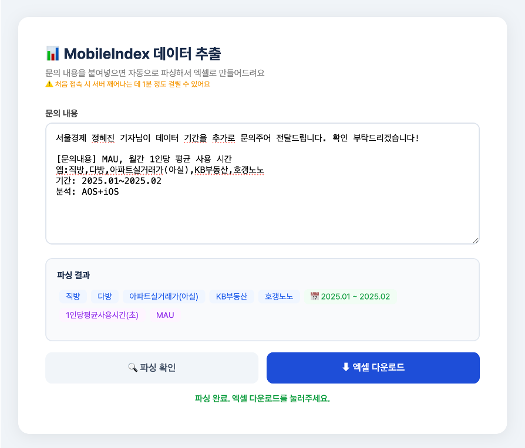
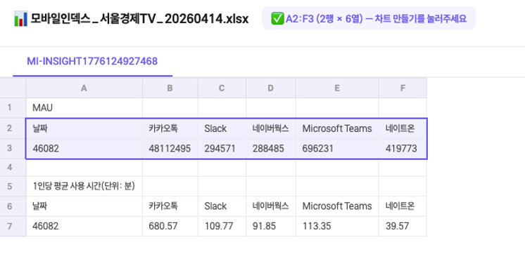
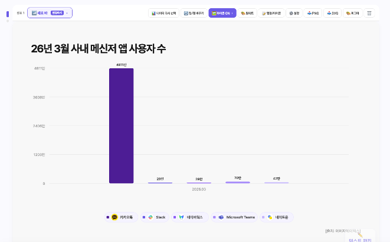
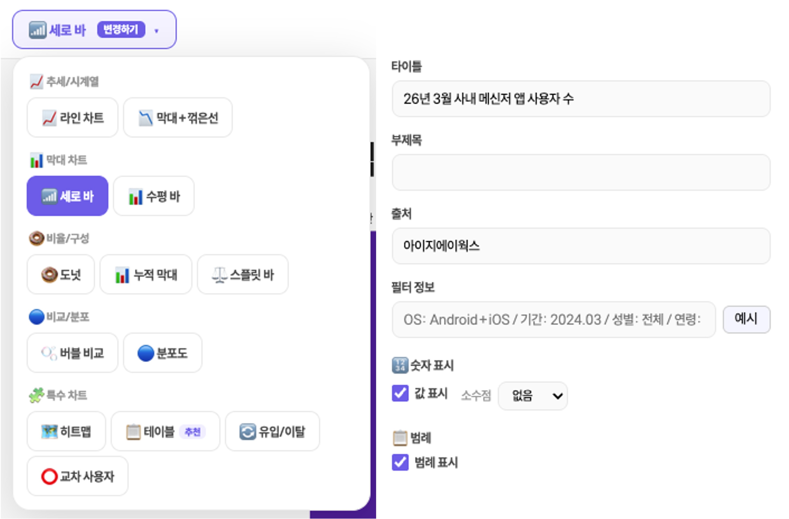
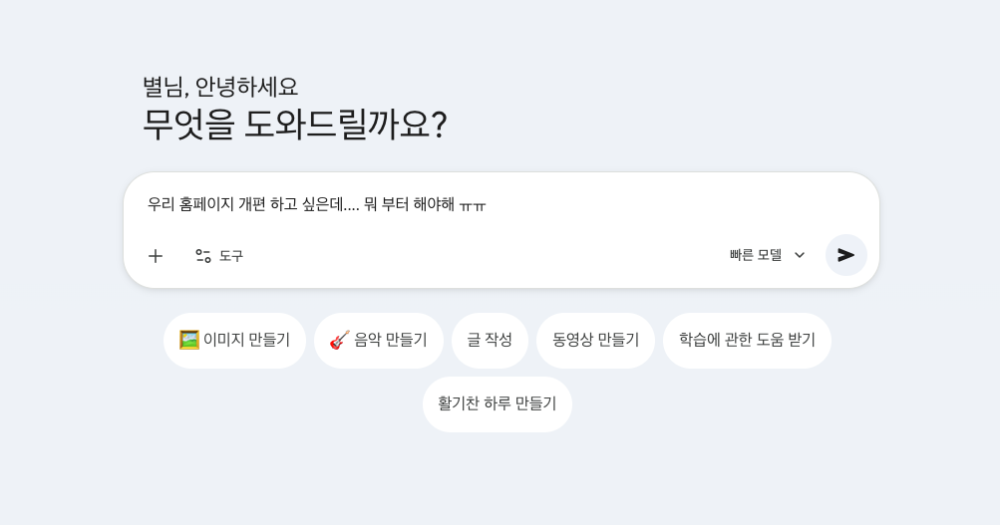
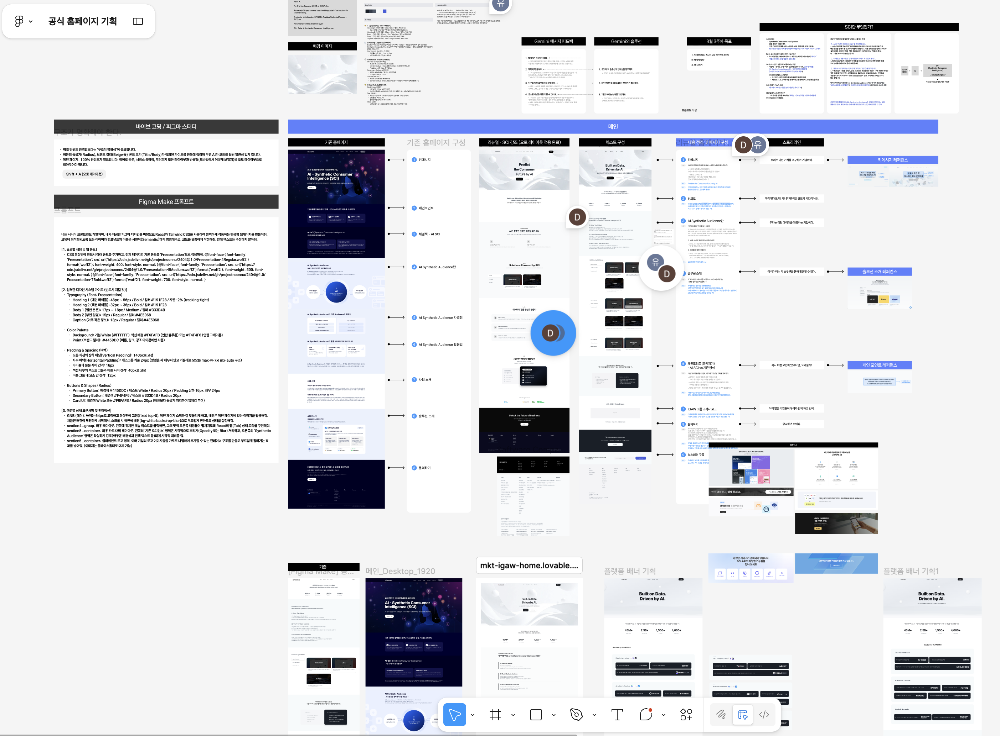
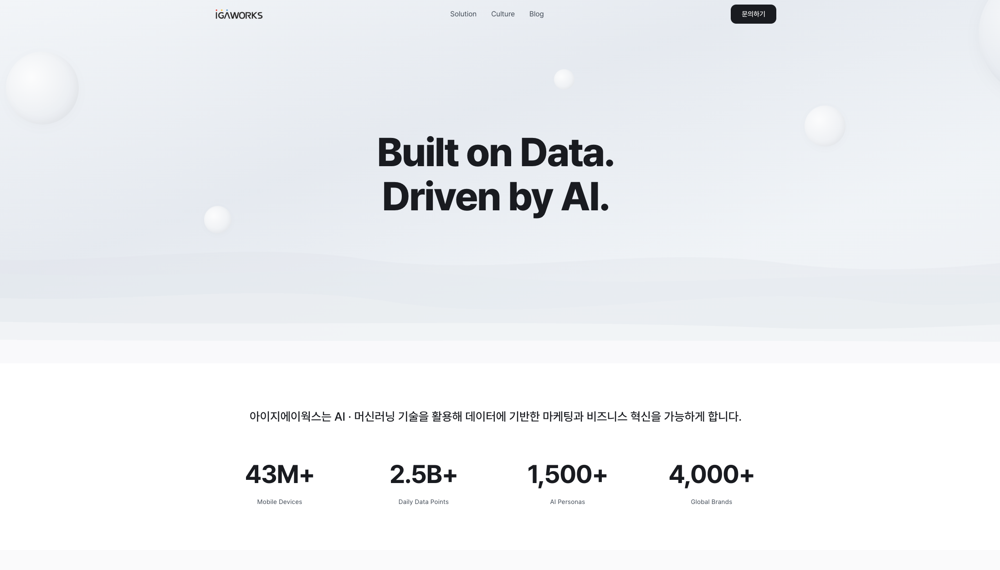

개발 지식 없이, 생각만으로 업무를 바꾼 이야기
터미널은 고속터미널밖에 몰라요
근데 예쁜 건 볼 줄 알아요
말로 하는 게 더 편해요
동일한 포맷으로 매주/매월 반복
콘텐츠 제작, 뉴스레터, SNS
홈페이지 기획-디자인-개발-배포
브랜드 신뢰도를 위한 PR 데이터 제공, 플랫폼 트래픽 지표 트래킹
디파이너리 대시보드 8개를 포함해 플랫폼마다 직접 접속해 숫자를 복사하고 구글 시트에 붙여넣는 작업.
어렵지 않지만 매주 반복되고, 시키기도 애매한 그 업무.
디파이너리 대시보드 8개 포함, 매번 수동 접속 → 복사 → 붙여넣기
누적되면 수시간 낭비, 오입력 리스크 상존
쉬는 날에도 지표 정리 걱정, 제대로 쉬지도 집중하지도 못하는 상태
오픈 API 구조 파악, 파트너 키워드 매핑, 채널 자동 분류
대시보드 데이터를 하나의 구글 시트로 정리
광고 계정 전용 앱스 스크립트 활용
구글 앱스 스크립트 활용 직접 호출
매일 오전 7시 자동 실행, 출근하면 이미 완성
앱명·기간·지표가 뒤섞인 자유 형식 문의를 매번 MI에서 검색하고, 엑셀로 정리해서 전달.
건당 5~10분, 하루에도 수십 건.
콘솔 접속 → 앱 검색 → 기간 설정 → 지표 선택 → 엑셀 정리
앱명 한글/영문 혼용, 기간 표현 제각각, 복수 앱·복수 기간
누적되면 수시간 낭비, 오입력 리스크 상존
앱명·기간·지표가 포함된 자유 형식 텍스트 그대로
앱명·기간·지표 자동 추출, 복수 앱·복수 기간 동시 처리
패키지명 자동 검색, MAU·DAU·신규설치·사용시간·기기수
지표별 시트 분리, 피벗 구조 + 스타일 자동 적용

콘텐츠 기반 뉴스레터 제작 및 스티비 온보딩
모바일인덱스 데이터 기반 순위 콘텐츠
SNS 업로드용 텍스트
이미지 제작
데이터 수집 → 엑셀 정리 → 피그마 업데이트 → PPT 편집.
매달, 처음부터.
6개 업종 × 개별 CSV 다운로드
CSV → 엑셀 복붙, 피그마 동기화 수동 업데이트, PPT 직접 편집
동일 작업 매월 반복, 아이콘·순위 변동 라벨 수동 처리
급상승 TOP50, 업종별 신규설치 6개, 게임 사용자수·매출
앱명 정규화, 임베디드 앱 필터, Google Play 아이콘
report + thumbnail, 순위 변동 라벨 자동 (↑↓ New 구분)
TOP50 데이터 엑셀, PR 배포 양식 생성, 파일명 자동 변경
템플릿 기반 완성, 아이콘 매칭 검증, 구글 시트 자동 업로드
콘텐츠 리라이팅부터 스티비 내 디자인 구현까지 매주 고정 리소스 발생.
스티비 내 디자인 한계로 운영상의 한계.
뉴스레터 형식으로 리라이팅
버튼/구분선/이미지/박스 섹션 드래그 앤 드롭으로 디자인
반복적인 레이아웃 및 특정 파트 강조가 어려움
콘텐츠 URL 입력 시 뉴스레터 형식으로 자동 작성
깔끔하고 가독성 좋은 디자인, 포맷/글꼴/색상 등
AI 임의 내용 생성 방지, 원본 대조 기능, 하이라이트 표시
생성된 초안 내에서 내용/디자인 바로 편집
스티비에 붙여넣으면 즉시 발송 가능 상태
오픈율은 0.5%p 소폭 상승에 그친 반면, 클릭률은 2배 이상 급등
매주 3개 SNS에 맞는 공유용 글 작성에 1시간 정도 소요.
SNS 특성에 맞게 리라이팅
플랫폼별 포맷 + 톤을 다르게 작성
사용 가능한 문장을 별도로 메모하는 번거로움
콘텐츠 URL 입력 시 SNS 공유 형식으로 자동 작성
페이스북 — 인사이트 중심, 링크드인 — 전문적이게, 인스타그램 — 짧고 간결하게
수치 강조, 스토리텔링, 질문형 등 SNS당 3개의 후보 작성
텍스트 자유 편집 & 저장, 마음에 드는 문장만 골라 하나로 합치는 '조합' 기능
실제 SNS에 올렸을 때의 느낌 확인 가능
데이터 정리 → PPT에서 그래프화 → 필요 시 피그마로 세부 편집.
장표 만드는 데 시간이 많이 소요.
필요 시 피그마로 세부 수정
PPT 그래프를 위해 데이터 정리 및 가공 필요
사람마다 폰트, 색상, 레이아웃이 달라 통일감이 없었음
실제 장표 디자인을 보여주고 그 틀에 맞는 레이아웃
엑셀 파일 올리면 별도 가공 없이 바로 장표
순위면 표, 추이면 라인 그래프, 데이터 특성에 맞는 차트
세부 수정 필요 시 피그마로 바로 가져가 수정
앱 아이콘 자동 매칭



홈페이지 기획 — 디자인 — 개발 — 배포까지…

어떤 것들을 보여줘야 하는지 '정리'하세요.
Kiro가 모든 페이지에 동일한 느낌을 줄 수 있게 디자인 가이드를 잡아주세요.
참고 레퍼런스 사이트가 있으면 알려주세요.
시작해보자 ☺


개발 지식이 없어도 생각만으로 무엇이든 할 수 있고, 심지어 툴을 회사에서 제공해주니
무엇이든 시작해보세요!